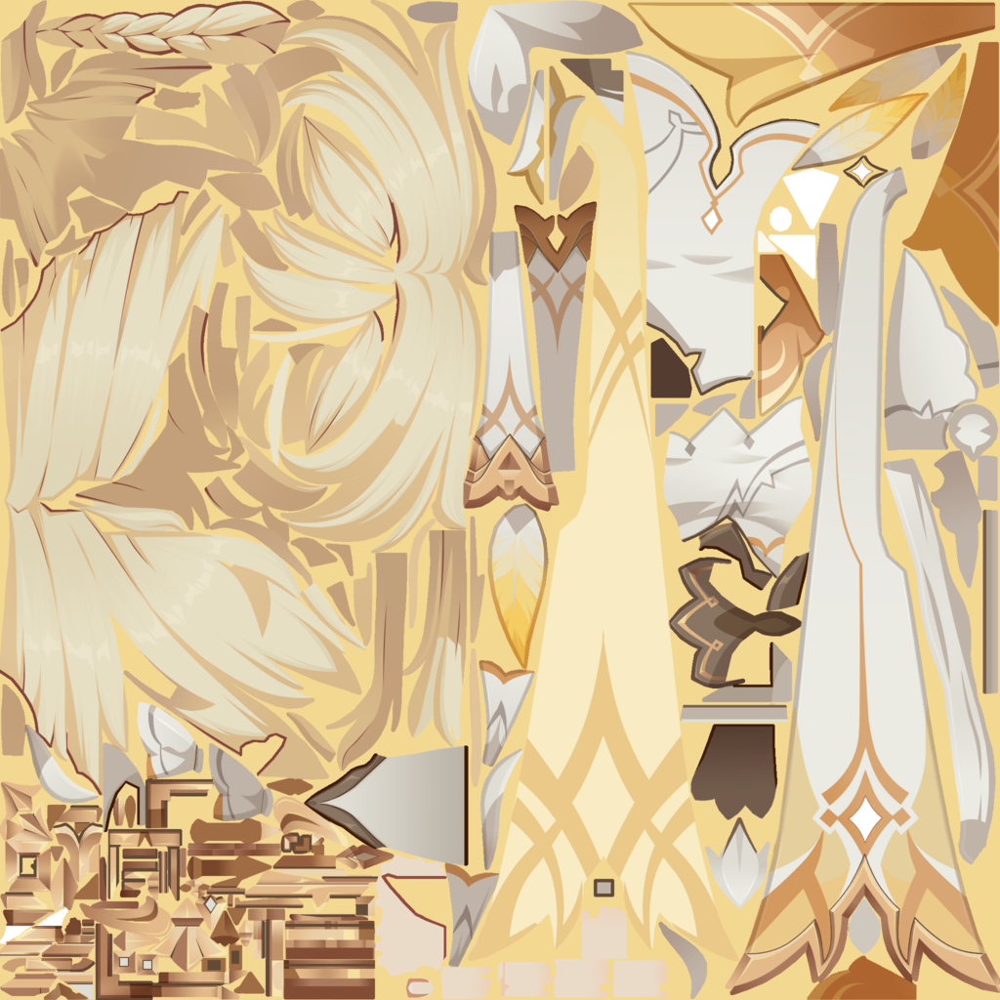
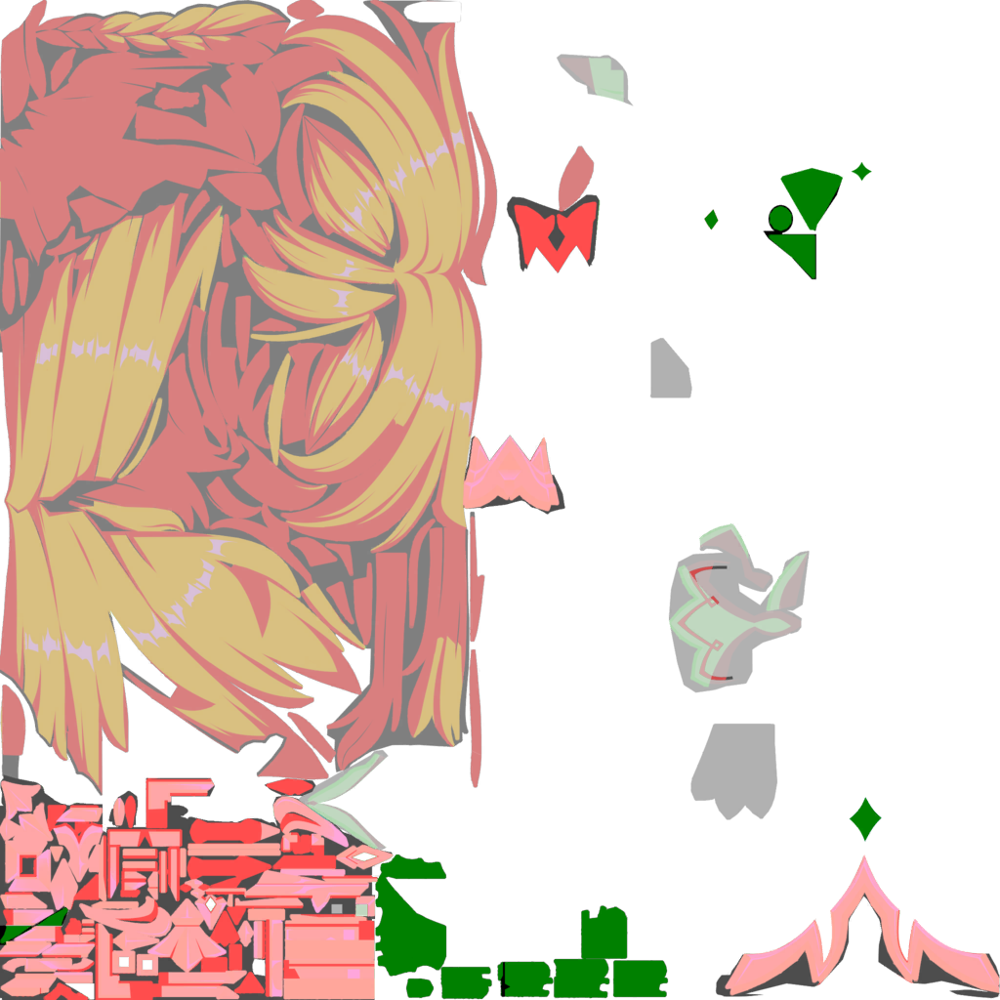
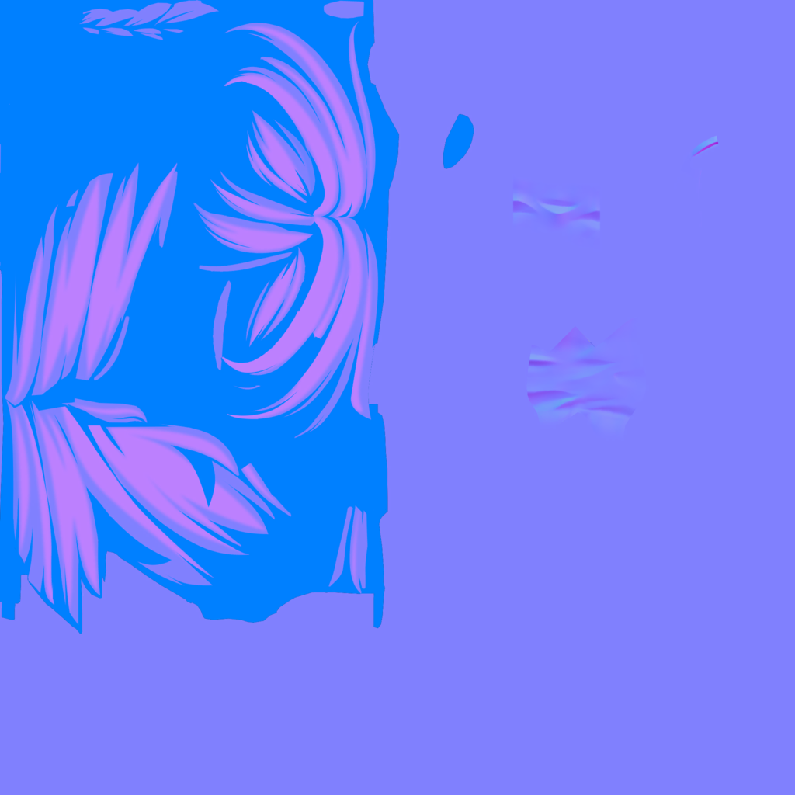
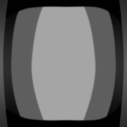

Why does Genshin Impact look the way it looks?
Toon shading is a deliberate choice to look less real.
This tool compares three real-time shading approaches — PBR (physically based, used in most modern games), Nintendo's cel-shading (used in Breath of the Wild), and Genshin Impact's anime style — using the same light source so the differences are clear.
Modern anime-style games often recreate the look of hand-drawn animation inside a 3D environment. One of the most recognizable examples is Genshin Impact, developed by HoYoverse. Instead of fully realistic rendering, the game uses stylized shading techniques that simplify lighting, shadows, and outlines to mimic anime illustration. [1]
A core part of HoYoverse's philosophy is finding the right balance — not chasing ultra-realistic visuals, but instead refining quality while keeping the game's expressive art style and making sure it runs well for players across all kinds of devices. The result is a visual language designed to be both beautiful and broadly accessible. [3]
Although the visuals appear simple, the style depends on a careful balance between technical rendering systems and artistic direction. By simplifying how light interacts with surfaces, the developers maintain strong colors, clear silhouettes, and expressive materials.
Simplified Illumination
Traditional 3D rendering simulates realistic lighting with smooth gradients and physically accurate reflections. In contrast, stylized anime rendering compresses lighting into fewer steps, creating sharper transitions between illuminated and shadowed surfaces. [2]
This contrast is especially visible when compared to The Legend of Zelda: Breath of the Wild, developed by Nintendo, which retains softer gradients and more atmospheric lighting. While Breath of the Wild aims for a cohesive atmospheric world, Genshin Impact emphasizes readability and visual consistency — ensuring characters remain visually distinct regardless of environment. [1]
This simplified approach preserves the vibrant color palette used in anime-inspired character designs while still allowing the scene to respond dynamically to lighting.


Shadow as a Design Element
In stylized rendering, shadows are often treated as a design element rather than a purely physical effect. Instead of appearing as gradual gradients, shadows can appear as defined shapes that help emphasize the character's form.
Artists often control the placement and softness of shadows using threshold values or gradient textures, allowing them to maintain consistent and visually appealing shading across characters and environments. Genshin Impact uses techniques such as Cascaded Shadow Maps with Poisson noise soft shadows to achieve stable, clearly defined shadow edges. [2]
By designing shadows this way, artists maintain control over how forms are perceived, preventing important visual details from being lost in complex lighting conditions. This approach prioritizes clarity over realism, reinforcing the stylized aesthetic.


Emphasizing Silhouettes
Outlines are a defining feature of many anime-style rendering pipelines. By adding a dark border around the character's silhouette, the renderer reinforces the illusion that the character is hand-drawn rather than purely three-dimensional.
This effect is typically created by rendering a slightly expanded version of the character mesh behind the original model in a darker color. The result is a clean outline that improves visual readability and helps characters stand out from the background.

Stylized Metals and Highlights
Materials such as metal surfaces are also stylized to match the overall art direction. Instead of using complex reflections, many objects rely on exaggerated highlights that move across the surface when lighting changes. These highlights suggest shininess while maintaining performance and ensuring that the material style remains consistent with the rest of the visual design.





A deliberate visual language.
The rendering style of Genshin Impact, developed by HoYoverse, demonstrates how modern graphics technology can support a strong artistic vision. By simplifying lighting, shaping shadows, reinforcing silhouettes with outlines, and stylizing materials, the developers create a visual style that closely resembles anime illustration. [1]
Rather than focusing on realism, the game prioritizes clarity, color, and expressive design, allowing its characters and environments to remain visually distinctive throughout gameplay.
This approach also shapes how players perceive and interact with the game world. The emphasis on clarity and stylization ensures that characters remain the visual focus, supporting both gameplay readability and the game's identity as a character-driven experience.
- Genshin Impact: Crafting an Anime-Style Open World — GDC Talk, HoYoverse
- Genshin Impact: Console Graphics Rendering Pipeline — nugglet
- Behind the Scenes of Genshin Impact: To Snezhnaya and the Future — HoYoverse
- The Legend of Zelda: Breath of the Wild — Nintendo, 2017
- Genshin Impact — HoYoverse, 2020